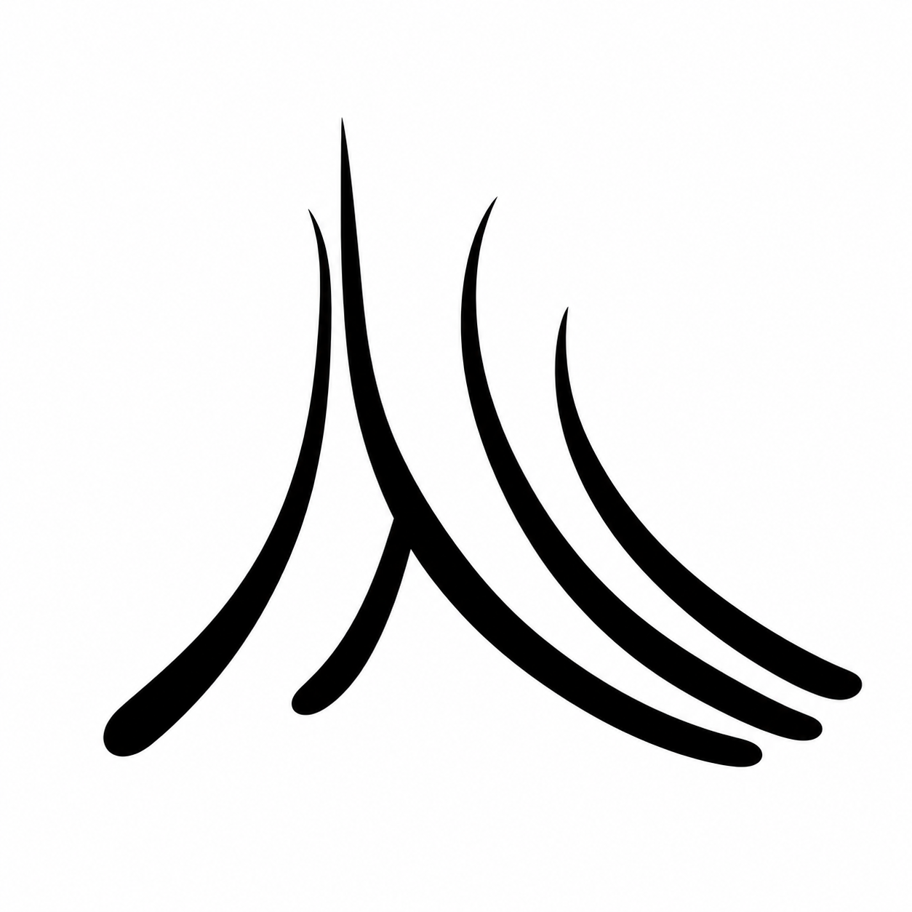
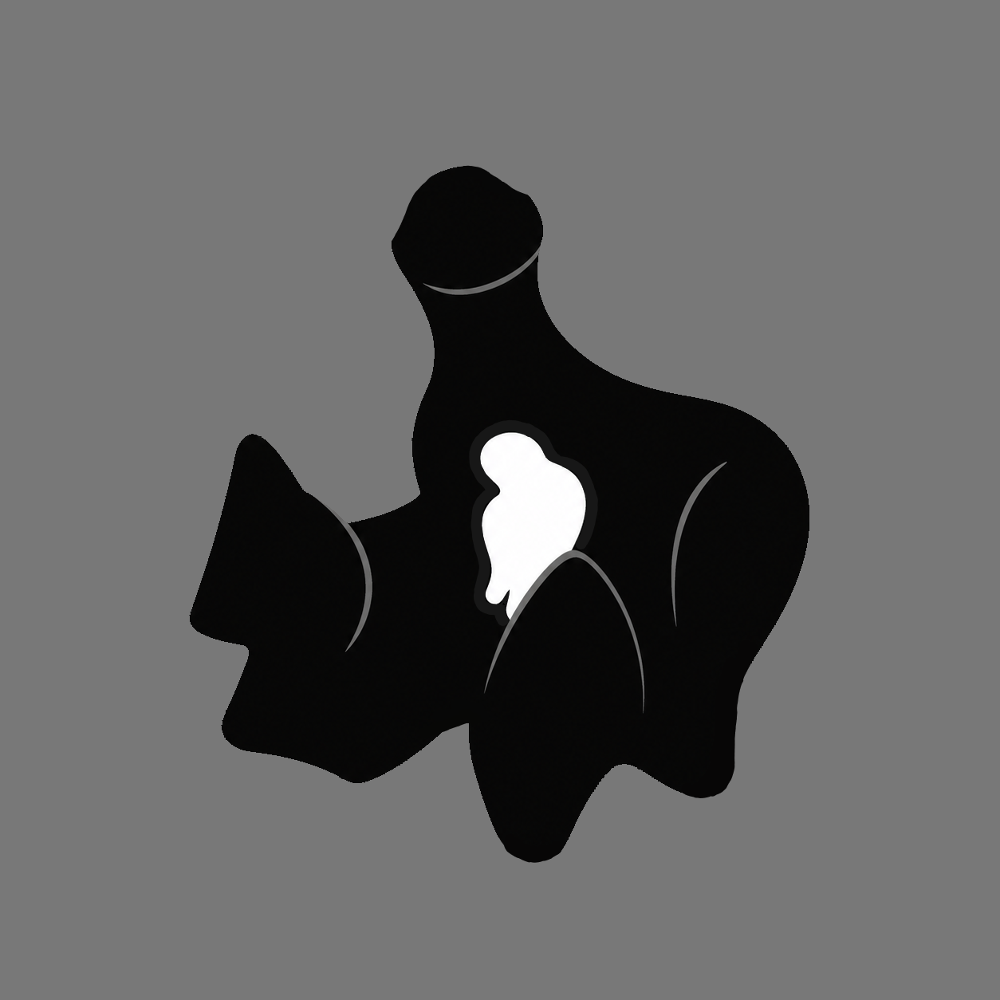
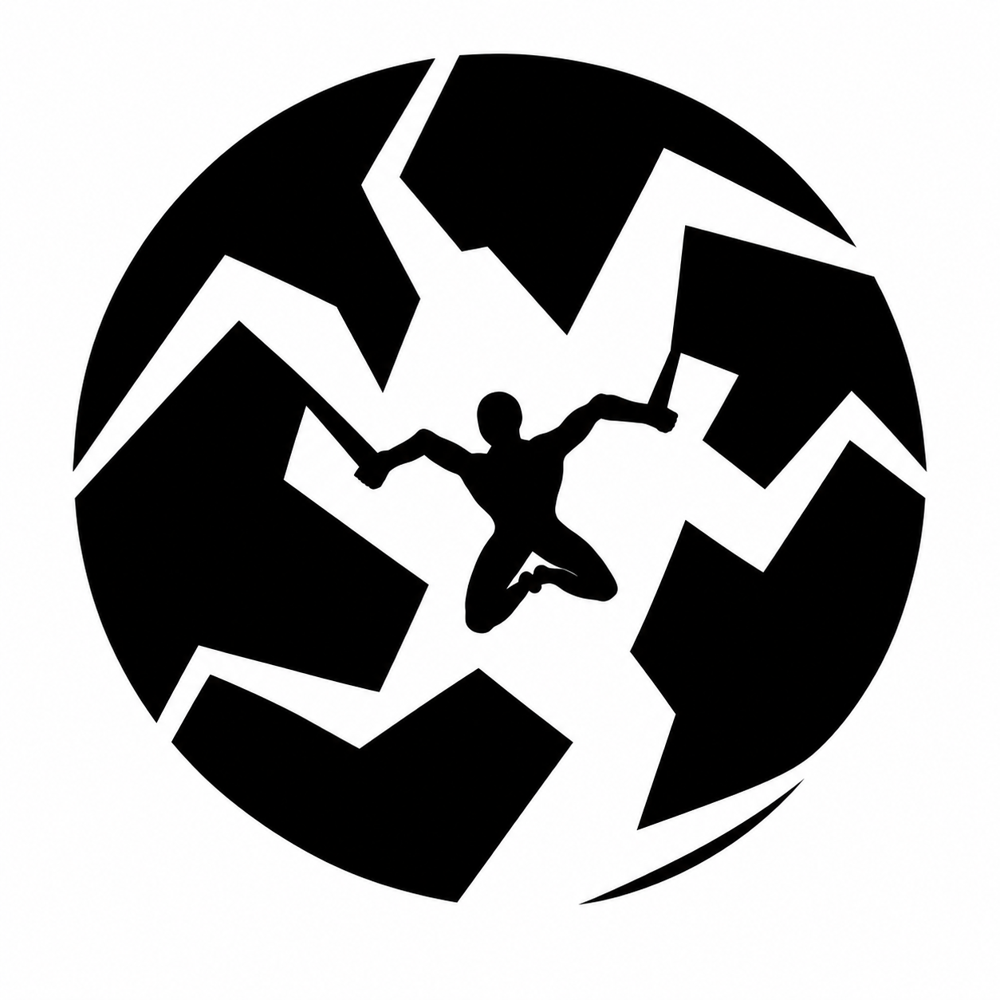

Saigret — Symbolic Visual Design
For writers, creators, and brands who need to express complex ideas through focused, symbolic visuals.
Not every idea needs the same level of complexity. Some ideas need a sharp mark. Others need a developed visual concept. Some need a full symbolic composition.
Level 1
Small, focused visual marks built around one core idea. Best for creators who need a clean symbolic image, personal mark, project emblem, or visual identity seed.

A compact symbol built from the constraints of threads and ambition. The upward structure suggests an A, a triangle, and a rising house-like form, turning movement and aspiration into a simple visual mark.

A fragile white shape held inside a dark hand-like mass. The symbol represents enclosure, protection, and confinement at the same time, showing reclusion as both shelter and prison.

A symbolic piece built around psychological pressure, instability, and internal collapse. The fractured structure creates directional tension while the central figure becomes trapped between opposing forces, suggesting stress, fragmentation, and the struggle to maintain control.
Level 2
A focused symbolic image built around one idea, with stronger composition and mood than a simple symbol, but without the full narrative complexity of a full illustration.

A symbolic piece built around threat, pursuit, and the feeling of being watched.

A visual idea exploring promise, temptation, and the danger hidden inside opportunity.
Level 3
Complete symbolic compositions for stories, covers, campaigns, or concepts that need stronger emotional and narrative weight.

A composition about fear, confinement, and an overwhelming presence pressing in on the character.

A symbolic cover built around isolation, mental collapse, and the moment before confrontation.

A visual interpretation of control, obedience, and psychological pressure.
You bring the concept, story, theme, or emotional direction. I reduce it to the strongest visual center.
The idea becomes shapes, contrasts, metaphors, and composition choices instead of vague explanation.
The goal is not decoration. The goal is a visual that makes the idea easier to feel, understand, and remember.
Testimonials
"Saigret successfully captured the story’s tone by conveying the woman’s fear through her facial expression. By enlarging the walls and making them loom over her, the piece effectively captures the ominous presence of the Wall."
Author: AbKane667
“The cover perfectly captured the tone of the story… a beacon in darkness where the perceived solitude is about to be broken.”
“Psychologically, it reflects a character isolated in their own mind, about to be confronted at their most desperate moment.”
Author: vhs_sold_blank
"I was very impressed with the quality of Saigret’s artwork. It really brought my story to life in a new way. He did a great job capturing the psychological elements I was trying to convey. If you're looking for someone talented, resourceful, and easy to work with, he’s a fantastic choice."
Author: HorrorJunkie123
Work With Me
If you have an idea, story, brand, or concept that feels hard to explain visually, I can help turn it into a clear symbolic image.
Email: saigret1@gmail.com
Contact me on Reddit